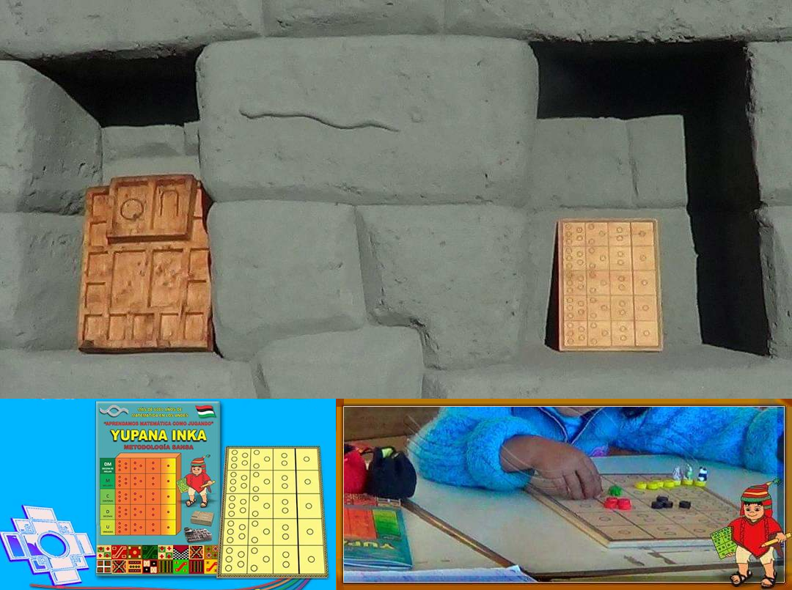
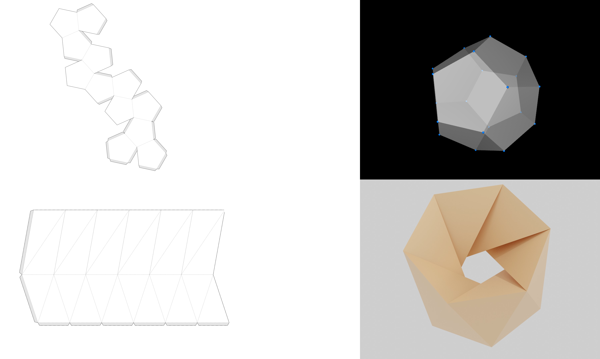
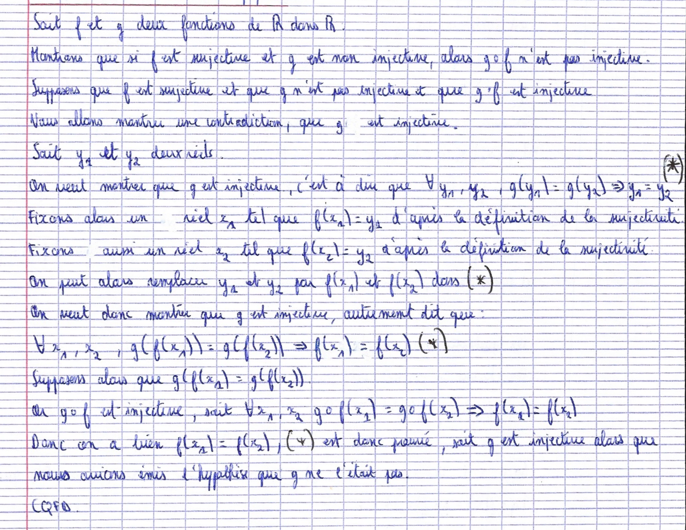
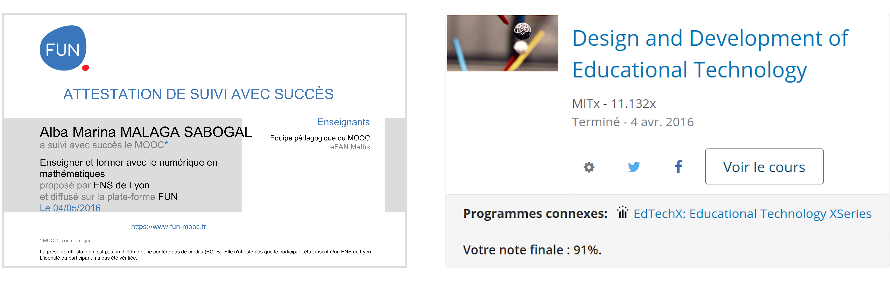
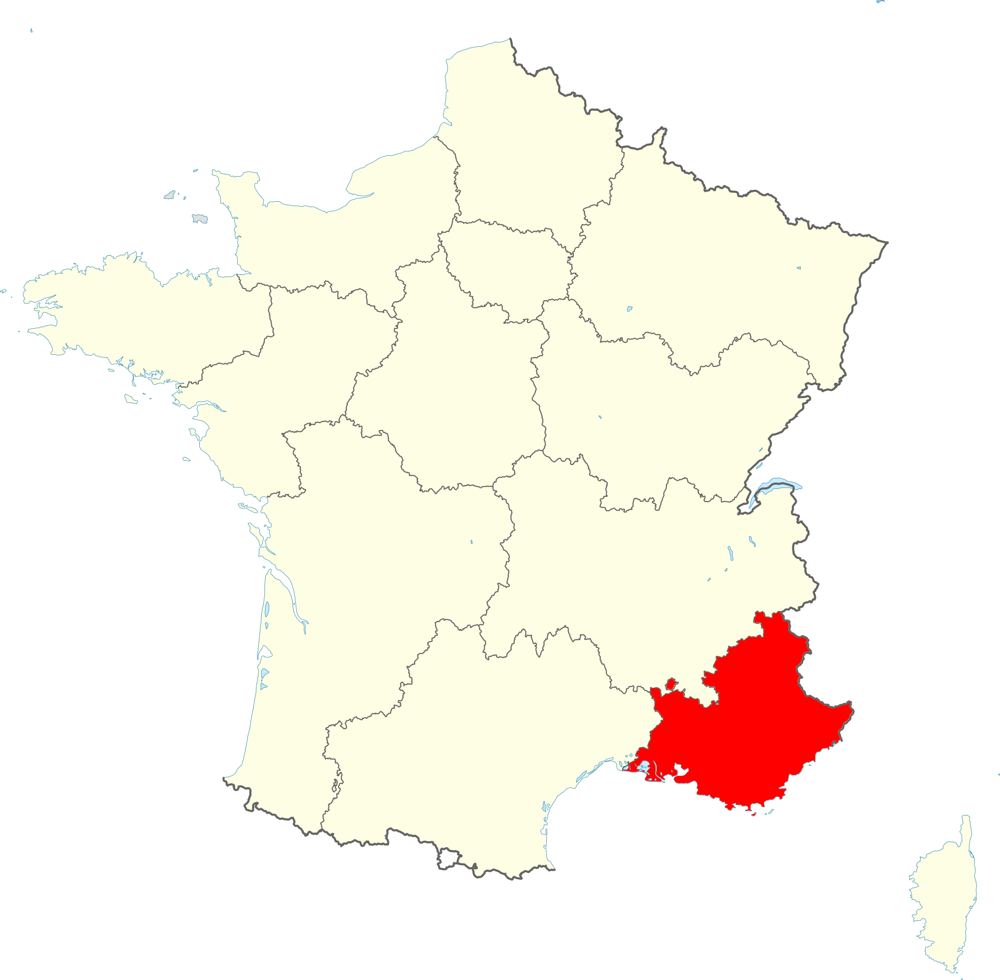
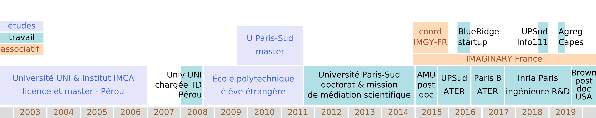

L’impression 3D
 Vecteur de compréhension de la géométrie.
Vecteur de compréhension de la géométrie.
Alba Marina MÁLAGA SABOGAL
2020-06-02
EAST: Rôle des artefacts dans l’efficacité de l’éducation scientifique et technologique
Axe thématique «outils et instruments pour l’enseignement».
Quelques projets de recherche:
| Primaire | Nombres avec la yupana inca |
| Secondaire | Géométrie avec l’impression 3D |
| Supérieur | Le raisonnement mathématique avec L\(∃∀\)N |

Expérience d’initiation à l’addition et à la multiplication
Vecteur de compréhension de la géométrie.

Diverses techniques de représentation de polyèdresL\(∃∀\)N: un assistant de preuves (LEAN)
Utilisé en L1 math-info
cours «Introduction aux mathématiques formalisées»
par Patrick Massot,
prof d’université en mathématiques à Orsay

Exemple de preuve rédigée sur papier
Trois étapes:
Formation professionnalisante donc équilibre entre:
Formation interdisciplinaire donc équilibre entre:
Collège:
Lycée général et technologique
Formation professionnalisante donc équilibre entre:
Formation interdisciplinaire donc équilibre entre:
 |
\(\longleftrightarrow\) |  |
| U. Washington | Inspé Marseille | |
| 3-4 students | 3-4 étudiants | |
| J. Athreya | A. Málaga |
| Mon parcours | Applications à la formation des enseignants |
|---|---|
| Géométrie et systèmes dynamiques | Création de parcours de recherche pour les élèves |
| Impression 3D | Usages en classe de la conception et de l’impression 3D |
| Accessibilité | Créer des documents accessibles pour les élèves |
| Usage d’une imprimante Braille | |
| Esprit «maker» | L’armoire de l’enseignant de mathématiques Intégration des TICE |
| Médiation scientifique | Informations sur les événements, le milieu, les ressources,… |
Les projets de recherche déjà présentés:
| Primaire | Nombres avec la yupana inca |
| Secondaire | Géométrie avec l’impression 3D |
| Supérieur | Le raisonnement mathématique avec L\(∃∀\)N |
peuvent bénéficier d’une collaboration dans Sfere au-delà de l’ADEF, en particulier avec l’I2M et l’IREM de Marseille.
2015: Médiation scientifique et plateformes de partage
2020: Outils logiciels pour les mathématiques et l’illustration

Une autre exposition Imaginary à Marseille
avec une approche de recherche didactique.
| continuité et ouverture dans la recherche | un vrai souci de l’accessibilité | fibre «maker» |
| intérêt en médiation scientifique | enseignement dans le respect | parcours polyvalent |
J’ai à cœur de m’intégrer dans la recherche à l’ADEF, dans l’enseignement à l’Inspé et dans le bain interdisciplinaire de Sfere-Provence.
